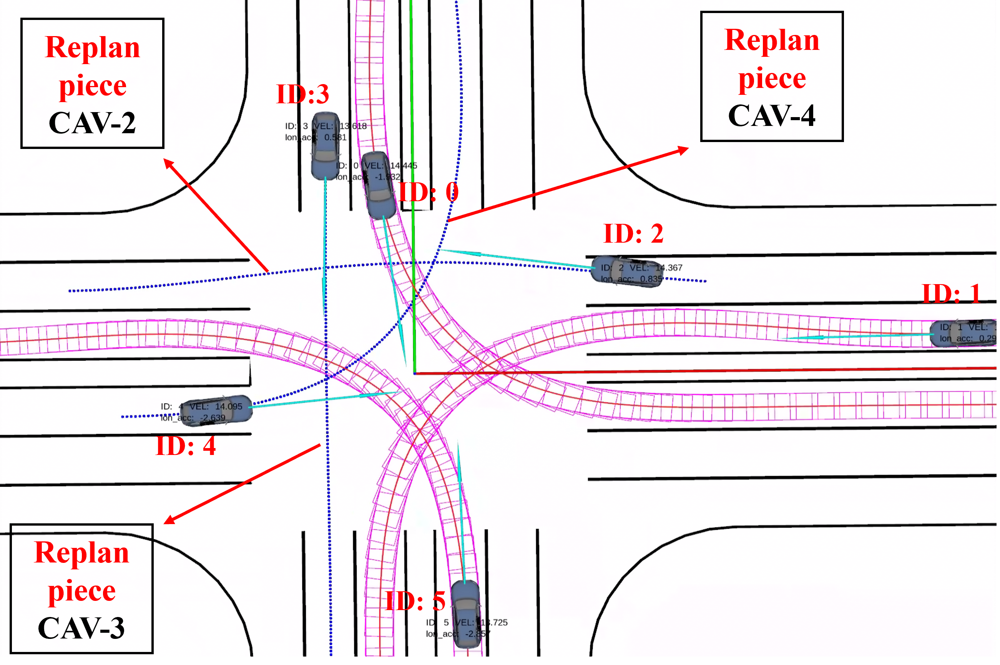

LECTP: Lightweight and Efficient Cooperative Trajectory Planning for Multi-CAV at
Unsignalized Intersections
A cooperative motion planning simulation at an unsignalized intersection was conducted in a 7×4 m
indoor environment, where UAVs were used to emulate roadside computing units, and UGVs served as
intelligent connected vehicle models.
Abstract
V2X-based multi-vehicle cooperative motion planning enables intelligent connected vehicles
within a region to achieve optimal passage, thereby improving traffic efficiency and safety
at various complex urban intersections. To ensure reliable coordination, high-quality yet
lightweight trajectory representation and efficient optimization are essential. This paper
presents a lightweight and efficient cooperative planning framework for multi-vehicle
systems at unsignalized intersections, jointly considering trajectory quality and traffic
efficiency. To resolve spatiotemporal conflicts, we propose a conflict resolution strategy
based on experience reuse, which accelerates resolution by reusing intermediate results and
focusing on newly emerged conflicts. To address the reliance of high-quality trajectories on
dense temporal discretization, we formulate a parameterized minimum-time joint optimization
model that reduces the optimization dimensionality while ensuring minimum traversal time. We
conduct simulation studies in a 200m × 200m six-lane bidirectional intersection. Compared to
the most efficient baseline, the proposed method achieves a significant improvement in
computational efficiency, with a speedup ranging from 60.04% to 91.37%, while
simultaneously reducing the average communication data load by 94.76%. Finally, we validate
the proposed method in a 7m × 4m indoor intersection experiment involving six vehicles. The
results show that the framework performs well in allocating spatiotemporal resources and
ensuring smooth multi-vehicle coordination.
Cooperative Motion Planning System Architecture
Fig. 4: Overview of our complete intersection cooperative motion planning system,
illustrating the proposed scheme for conflict detection and resolution. The right part of the figure
shows the passage trajectory generation module, which integrates all the requirements discussed in
Section Ⅲ. It demonstrates a three-stage process—conflict search,
experience reuse, and trajectory optimization—to generate spatiotemporally optimal
multi-objective trajectories for execution by CAVs.
Results
We conducted a comparative analysis of the proposed algorithm against three state-of-the-art
methods—PSB, Coupled OCP, and OPC-CBS—along two key dimensions: coordination
efficiency and trajectory quality, under various task types and
planning scales. The evaluation metrics encompass the following aspects:
Coordination Efficiency: Including algorithm runtime, total motion time of all
vehicles, average passing speed, interaction data volume, and average vehicle speed. Trajectory Quality: Focusing on the continuity and smoothness of the trajectory in
dynamic aspects such as velocity, acceleration, and jerk.
Visualization of cooperative motion planning performance under different numbers
of autonomous vehicles
Top-down view of the cooperative planning scenario.
Three-dimensional side view of the cooperative planning scene.
Close-up view of the intersection area.
Details of multi-vehicle cooperative motion planning in spatiotemporal conflict-intensive regions

(a) Local conflict resolution based on experience reuse
(b) Strong deformation capability in continuous space
(c) Trajectories returning to designated lanes
Fig. 7: Details of multi-vehicle cooperative motion planning in spatiotemporal
conflict-intensive regions
As shown in Fig. a, dense spatiotemporal conflicts occur among CAV-2,
CAV-3, and CAV-4 within the unsignalized intersection area. Traditional approaches typically perform
global replanning over the entire trajectory to resolve such conflict-intensive regions, which
incurs high computational overhead and often disrupts the consistency of the original trajectory. In
contrast, the proposed method enables substantial trajectory inheritance for CAV-2, CAV-3, and CAV-4
before and after entering the intersection, with only localized trajectory reconstruction applied in
the core conflict zone. As illustrated in Fig. b, CAV-2 and CAV-3 exploit the strong deformation
capability of the differentially flat vehicle model to generate spatial trajectories in continuous
space. By temporarily utilizing the adjacent right lane, they execute high-speed evasive maneuvers
around CAV-0 and CAV-4, achieving passage speeds of 14.914 m/s and 14.149 m/s, respectively.
Subsequently, both vehicles return to their designated task lanes, as depicted in Fig. c. This
strategy maintains trajectory structural stability and prevents the propagation of new conflicts
caused by large-scale trajectory modifications. By applying localized conflict segment replanning,
the method significantly reduces the solution space explored during CBS node expansion.
Therefore, by reusing trajectory segments outside the conflict zone and performing incremental
correction only on localized conflict fragments, the proposed method substantially lowers the
solution dimensionality and cost function perturbation, thereby improving overall planning
efficiency and solution convergence.
Architecture of the indoor UAV-UGV cooperative motion planning experimental
system based on ROS
Fig. 9: The setup mimics a bidirectional four-lane intersection with six AgileX
LIMO Pro robotic platforms representing intelligent connected vehicles. Among them, four vehicles
are assigned left-turn tasks and two are assigned straight-driving tasks. Each LIMO communicates in
real-time with a simulated roadside computation unit carried by a quadrotor UAV. The LIMO robots
send task waypoints and real-time state information to the UAV, which runs the proposed
collaborative spatiotemporal trajectory optimization algorithm and returns parameterized
trajectories to each vehicle for execution. The LIMOs follow the generated trajectories using
Ackermann steering mode. For precise vehicle localization, we employ the FZMotion Motion Capture
System.
Physical experiment results
Fig. 10: (a) Snapshot of the entire experiment process.
(b) Historical trajectories and current vehicle states corresponding to (a).
(c) Speed-time curves of all vehicles.
(d) Temporal variation of the maximum and minimum inter-vehicle distances.